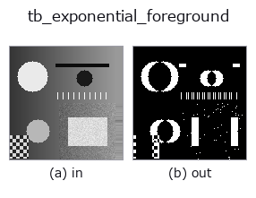

typed op• Data kinds: video → video
• Call: fullseye.apply(img, "tb_exponential_foreground", a=0.5, b=0.5) (the 2-D model is one image plus two scalar knobs a,b∈[0,1])

*The figure is the actual output on a synthetic 128×128 input. Left: input, right: output. Point clouds are drawn as a top-down scatter (brightness = z), 1-D series as a line plot, volumes as the maximum-intensity projection along z, videos as the middle frame, complex images as magnitude; return values that are not pictures are shown as the values themselves.*
Sweeping knob a (0.1 / 0.5 / 0.9, the other knob at its default):
▸ tb_exponential_foreground: knob a sweep (docs site)
Sweeping knob b (0.1 / 0.5 / 0.9, the other knob at its default):
▸ tb_exponential_foreground: knob b sweep (docs site)
Stages (the ops that come before → this op, left to right):
▸ tb_exponential_foreground: stages (docs site)
On other images (synthetic scene / photo / coins. Top row: inputs, bottom row: their outputs. Knobs at default):
▸ tb_exponential_foreground: other inputs (docs site)
Motion (GIF: frames / views / slices in turn. The still figure is the complete one; the GIF is supplementary):
Foreground masks `|frame − exponential background| > threshold → 0/1 (T, H, W) (video`).
> The detailed description below is the original text — the summary and the headings are translated.
`exponential_background と同じ指数移動平均 bg += α (frame - bg)` を回し、
各フレームで 更新後の `bg との差 |frame - bg| > threshold` を 1 にする。
先頭フレームは `bg の初期化に使われ差が 0 なので、t = 0` は全画素 0。
• `video: (T, H, W)` 配列か 2-D フレームの list。整数 dtype は最大値で
`[0, 1] に正規化、float はクリップ。NaN/Inf は ValueError`。
• `alpha: [0, 1]`。大きいほど背景が速く追従し、止まった物体は
約 `1/α 枚で消える。1 だと bg == frame` になり常に全画素 0。
• `threshold: [0, 1]` の強度単位。全画素共通の絶対閾なので、暗部の
雑音と明部の雑音を同じ閾で切ることになる。
• 返り値: `(T, H, W)` float64 の 0 / 1。
• 失敗: `ValueError`。
画素ごとの分散で閾を決めたいなら `running_gaussian_foreground`。ゴーストの
無い動き検出なら `three_frame_difference`。
2-D 進化レジストリへ橋渡しした videostream の op `exponential_foreground。実装は同じで、呼び出し規約だけ op(v, a, b) に合わせてある。a が alpha(既定 0.05)、b が threshold`(既定 0.1)を振る。
• Sample-data catalog (download URLs / licences) — 2-D uses skimage.data (BSD/public domain) plus synthetic images; 3-D lists download URLs for real data sources (Stanford, PDS, …).
• Operator provenance and references — the sources of the research/methods this op family came from.
The program below has been verified to run (same input as the figure). In Studio's help this block becomes buttons that load and run it on the spot.
img_to_video 0.50 0.50 tb_exponential_foreground 0.50 0.50
▸ Load this pipeline · Load & run
The examples below call the underlying ledger op exponential_foreground. This bridge op is the same implementation adapted to the fn(v, a, b) convention, so the behaviour carries over unchanged (only the call form differs).
• video_streaming — py -3.11 examples/video_streaming.py
video as input)identity · tb_temporal_bandpass · tb_temporal_band_power · tb_temporal_median_window · tb_moving_average_window · tb_background_subtraction_window · tb_frame_difference_causal · tb_exponential_background
typed)tb_points_to_voxel · tb_estimate_point_normals · tb_iss_keypoints · tb_angle_3points · tb_project_points · tb_render_point_depth · tb_statistical_outlier_removal · tb_radius_outlier_removal
*Provenance: ops.py — 2D operator registry. This per-op note is generated by tools/opdocs.py md (do not hand-edit).*
© 2026 Kazufumi Furuse — Fullseye operator documentation. Licensed under Apache-2.0.
{kind=link}
{kind=link}
{kind=link}
{kind=link}